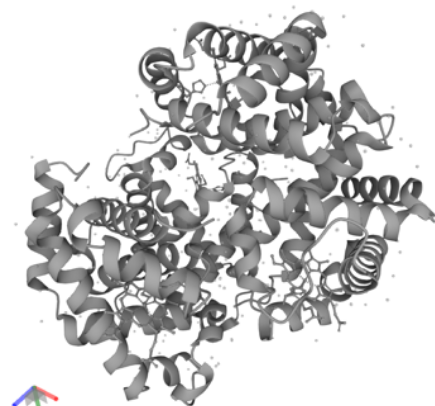
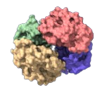
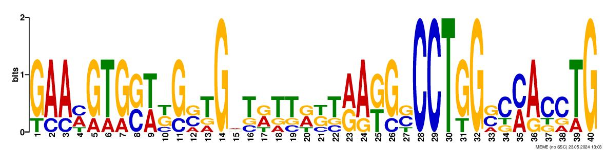
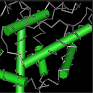
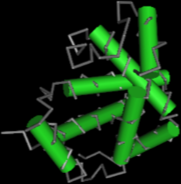

Informação
A proteína resultante da codificação do gene HBB é Subunidade Beta de Hemoglobina (NP_000509), que contém 147 aminoácidos. Além disso, é constituída por 2 cadeias/subunidades: LVV-hermofina-7 e Espinorfina.
A LVV-hermofina-7 potencializa a atividade da bradicinina (hormona), que, consequentemente, diminui a pressão arterial. Por outro lado, a Espinorfina é um inibidor endógeno de enzimas responsáveis pela degradação da encefalina (neurotransmissor), ou como antagonista seletivo do recetor (P2RX3) responsável pela sinalização da dor.
A função molecular desta proteína é vasoativa, sendo um agente hipotensor. Além disso, estabelece ligações com a hemoglobina alpha e com determinados iões. Estão envolvidas no transporte de oxigénio e dióxido de carbono pelo organismo, assim como na regulação e manutenção dos vasos sanguíneos e da circulação do sangue.
Sequência da Proteína
> NP_000509.1 hemoglobin subunit beta [Homo sapiens] MVHLTPEEKSAVTALWGKVNVDEVGGEALGRLLVVYPWTQRFFESFGDLSTPDAVMGNPKVKAHGKKVLG AFSDGLAHLDNLKGTFATLSELHCDKLHVDPENFRLLGNVLVCVLAHHFGKEFTPPVQAAYQKVVAGVAN ALAHKY
 Doenças associadas
Beta Talassemia (B-THAL)
Doença hereditária caracterizadas por uma produção reduzida ou ausente de beta-globina. Dependendo do grau da mutação podem ser B-THAL0 ou B-THAL+, caracterizadas, respetivamente, pela ausência e quantidades reduzidas de HBB.
Doença Falciforme
Doença genética autossómica recessiva causada por uma mutação no gene HBB, resultando na produção de uma forma anormal da proteína beta-globina (HbS – hemoglobina S).
A estrutura adquirida, formato de uma foice, pode levar à obstrução dos vasos sanguíneos, dor, danos a órgãos e uma série de outras complicações.
Anemia de Heinz
Pode existir devido a deficiências enzimáticas, exposição a oxidantes ou por doenças hereditárias. Os glóbulos vermelhos passam a conter corpos de Heinz, ou seja, hemoglobina danificada. Isto faz com que eles não fluam normalmente por capilares sanguíneos de pequenas dimensões.
Motifs
Foi encontrado apenas um motif, utilizando o Prosite, com 146 aminoácidos. Além da Metionina (aminoácido que corresponde ao codão de iniciação) ter sido removida, existem ‘-’, ou seja, naquela posição x pode estar qualquer aminoácido.
VHLTPEEKSAVTALWGKV---NVDEVGGEALGRLLVVYPWTQRFFESFGDLSTPDAVMGN PKVKAHGKKVLGAFSDGLAHLD-----NLKGTFATLSELHCDKLHVDPENFRLLGNVLVC VLAHHFGKEFTPPVQAAYQKVVAGVANALAHKY-
Domínios
cl21461: Globin-like Superfamily
Superfamília de domínios semelhantes aos da HBB, contém também uma grande diversidade de proteínas helicoidais, que se ligam a outras (porfirinas e ficobilinas) e a cofatores. A função destas está relacionada com a percepção e transporte de oxigénio.
cd08925: Hb-beta-like
É uma proteína de transporte de oxigénio dos eritrócitos, sendo um heterotetrâmero modulado alostericamente, ou seja, é constituída por 4 subunidades reguladas por efetores alostéricos. A subunidade Hb desoxigenada apresenta baixa afinidade com o oxigénio e a oxigenada elevada afinidade.
Sequências Homólogas de Proteínas
Com a ajuda do software BLASTP, encontramos 10 sequências homologas da proteína HBB ao organismo Homo Sapiens.
Gorilla gorilla gorilla
>XP_018891709.1:1-146 hemoglobin subunit beta [Gorilla gorilla gorilla] MVHLTPEEKSAVTALWGKVNVDEVGGEALGRLLVVYPWTQRFFESFGDLSTPDAVMGNPKVKAHGKK VLGAFSDGLAHLDNLKGTFATLSELHCDKLHVDPENFKLLGNVLVCVLAHHFGKEFTPPVQAAYQKVVA GVANALAHKY
Pongo abelii
>XP_002822173.1 hemoglobin subunit beta [Pongo abelii] MVHLTPEEKSAVTALWGKVNVDEVGGEALGRLLVVYPWTQRFFESFGDLSTPDAVMGNPKVKAHGKK VLGAFSDGLAHLDNLKGTFAKLSELHCDKLHVDPENFRLLGNVLVCVLAHHFGKEFTPQVQAAYQKVVA GVANALAHKYH
Trachypithecus francoisi
>XP_033062959.1:1-146 hemoglobin subunit beta [Trachypithecus francoisi] MVHLTPEEKAAVTALWGKVNVDEVGGEALGRLLVVYPWTQRFFESFGDLSSPDAVMGNPKVKAHGKK VLGAFSDGLAHLDNLKGTFAQLSELHCDKLHVDPENFRLLGNVLVCVLAHHFGKEFTPQVQAAYQKVVA GVANALAHKY
Nomascus leucogenys
>XP_004090697.3 hemoglobin subunit beta [Nomascus leucogenys] MVHLTPEEKSAVTALWGKVKVDEVGGEALGRLLVVYPWTQRFFESFGDLSTPDAVMGNPKVKAHGKK VLGAFSDGLAHLDNLKGTFAQLSELHCDKLHVDPENFRLLGNVLVCVLAHHFGKEFTPQVQAAYQKVVA GVANALAHKYH
Chlorocebus sabaeus
>NP_001316847.1:1-146 hemoglobin subunit beta [Chlorocebus sabaeus] MVHLTPEEKTAVTTLWGKVNVDEVGGEALGRLLVVYPWTQRFFESFGDLSSPDAVMGNPKVKAHGKK VLGAFSDGLAHLDNLKGTFAQLSELHCDKLHVDPENFKLLGNVLVCVLAHHFGKEFTPQVQAAYQKVVA GVANALAHKY
Rhinopithecus roxellana
>XP_010361646.1:1-146 hemoglobin subunit beta [Rhinopithecus roxellana] MVHLTPDEKAAVTALWGKVNVDEVGGEALGRLLVVYPWTQRFFESFGDLSSPDAVMGNAKVKAHGK KVLGAFSDGLAHLDNLKGTFAQLSELHCDKLHVDPENFRLLGNVLVCVLAHHFGKEFTPQVQAAYQKVV AGVANALAHKY
Erythrocebus patas
>AYO89363.1:1-146 hemoglobin subunit beta [Erythrocebus patas] MVHLTPEEKTAVTTLWGKVNVDEVGGEALGRLLVVYPWTQRFFESFGDLSSPDAVMGNPKVKAHGKK VLGAFSDGLTHLDNLKGTFAQLSELHCDKLHVDPENFKLLGNVLVCVLAHHFGKEFTPQVQAAYQKVVA GVANALAHKY
Miopithecus talapoin
>AYO89367.1:1-146 hemoglobin subunit beta [Miopithecus talapoin] MVHLTPEEKNAVTTLWGKVNVDEVGGEALGRLLVVYPWTQRFFESFGDLSSPDAVMGNPKVKAHGKK VLGAFSDGLTHLDNLKGTFAQLSELHCDKLHVDPENFKLLGNVLVCVLAHHFGKEFTPQVQAAYQKVVA GVANALAHKY
Cercocebus atys
>NP_001292888.1:1-146 hemoglobin subunit beta [Cercocebus atys] MVHLTPEEKNAVTTLWGKVNVDEVGGEALGRLLVVYPWTQRFFESFGDLSSPDAVMGNPKVKAHGKK VLGAFSDGLNHLDNLKGTFAQLSELHCDKLHVDPENFKLLGNVLVCVLAHHFGKEFTPQVQAAYQKVVA GVANALAHKY
Sapajus apella
>XP_032096415.1:1-146 hemoglobin subunit beta [Sapajus apella] MVHLTAEEKSAVTTLWGKVNVDEVGGEALGRLLVVYPWTQRFFDSFGDLSTPDAVMNNPKVKAHGKK VLGAFSDGLTHLDNLKGTFAQLSELHCDKLHVDPENFRLLGNVLVCVLAHHFGKEFTPQVQAAYQKVVA GVANALAHKY